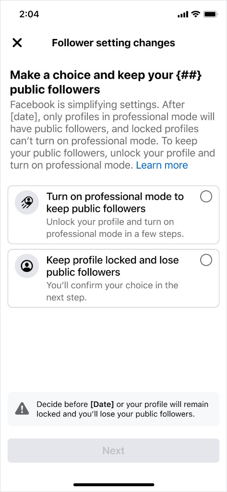

facebook · content strategy
Deprecating 100M+ locked, publicly followable profiles
Facebook had ~100M users with a settings contradiction: profiles were both locked (privacy-restricted) and allowed public followers. This initiative deprecated public follow for this cohort. The deprecation process required users who wanted public followers either to opt into Professional Mode or accept losing existing public followers.

Notification
1 of 8
My role
As the Facebook Profile content designer on this project, I:
- Directed content for deprecating 100M+ publicly followable and locked profiles
- Designed 8 multi-screen flows and 5 cross-channel emails
- Minimized disruption by ensuring clarity for sensitive cohorts, such as users under age 18
- Collaborated with Privacy, Legal and Help Center team to ensure a compliant and transparent experience
Challenges
- Forced setting change at scale. Required careful framing across notifications and flow to avoid panic and churn. All screens are content-heavy.
- Sensitive cohorts with the same baseline flow. Under-18 locked profiles, non-MAU users and special edge cases flowed through the same architecture but had different stakes and concerns.
- Cross-channel consistency. 8 in-app flows, 5 emails and the Help Center article had to land coherently with different surface-dependent design constraints.
Results
- 94.4% of locked profile users confirmed they wanted privacy, as anticipated
- Unexpected upside: 5.6% elected to convert to pro mode
- Revenue neutral and did not cause a negative engagement spike
- No SEVs or rollbacks, and all cohorts shipped without incident
94.4%
confirmed privacy intent
5.6%
elected pro mode